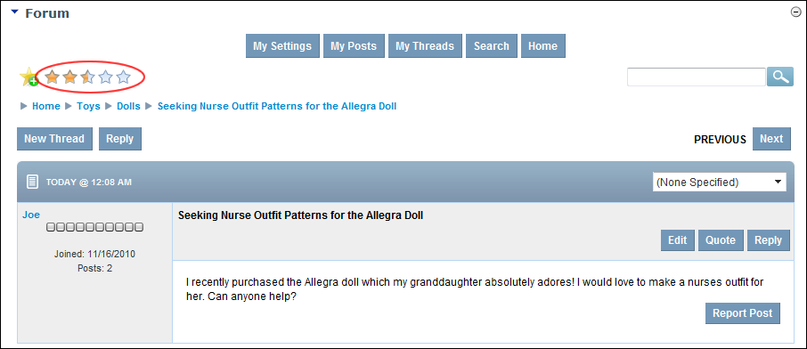

Rating a Thread
How to add a rating to a thread in the Forum module. Note: Ratings may be disabled on some or all forums.
- Locate and open the required thread. See "Viewing any Post"
- In the top right-hand corner of the module, a series of Stars are displayed.

- Click on the star rating that you want to give. This adds your rating to all existing ratings and displays the average rating on the thread.

The Rated Thread